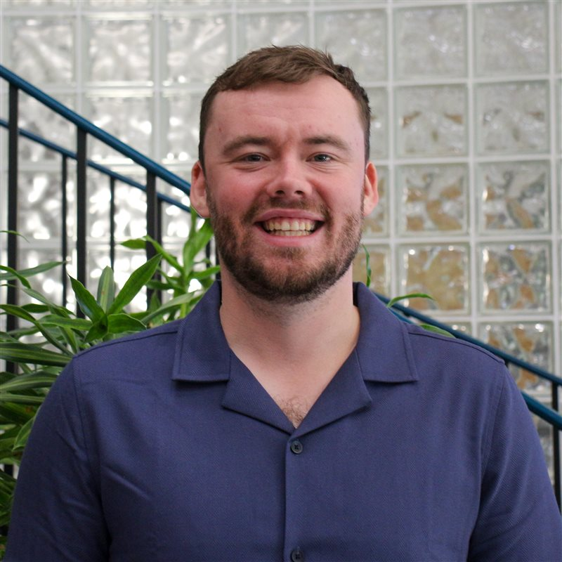

Cloud infrastructure, CI/CD, and automation — 5+ years turning fragile release processes into reliable pipelines.
Experienced DevOps Engineer with a software engineering background and over 5 years of experience in cloud infrastructure, CI/CD pipelines, and automation. Skilled in Azure, AWS, and infrastructure automation, with a proven ability to optimize deployment processes and mentor teams. Seeking development or DevOps roles where I can leverage my engineering expertise, leadership skills, and passion for coding to drive impactful solutions and contribute to organizational growth.
Open to development and DevOps opportunities. Reach out any time.